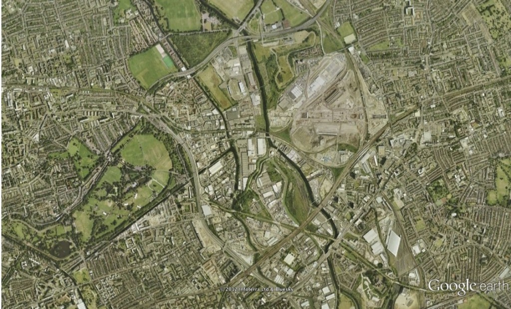
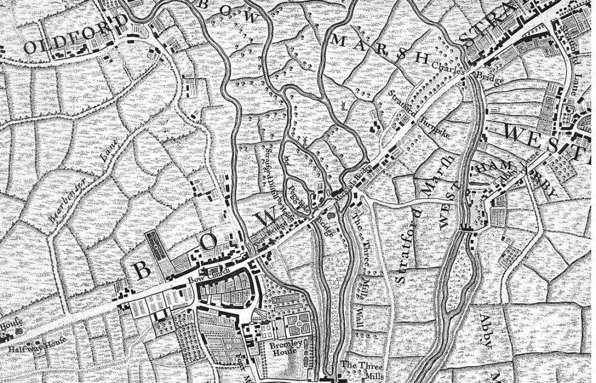
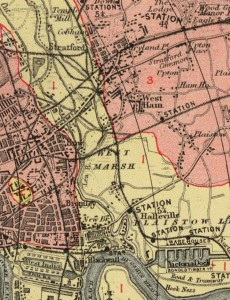
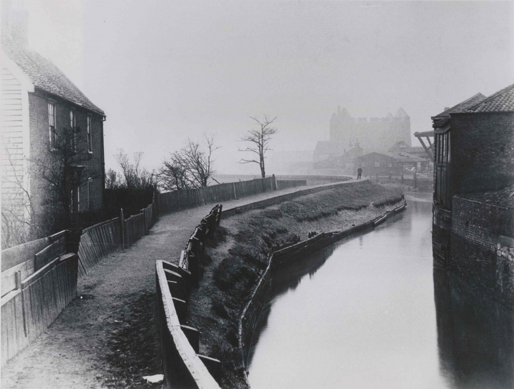
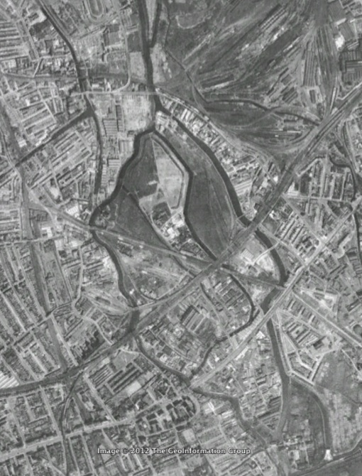

Currently one of the capital's most underdeveloped areas, the Lea Valley is an area of outstanding potential which will be transformed by the Olympic Games and Paralympic Games... The natural river system of the valley will be restored, canals would be dredged and waterways widened. Birdwatchers and ecologists will be able to enjoy three hectares of new wetland habitat... The rehabilitation of the Lower Lea Valley lies at the heart of the Olympic legacy to east London, restoring an eco-system and revitalising an entire community.Labeling one of the most important sites of Greater London's industrial development as underdeveloped ignores the significance of the Lower Lea Valley's history. It might have been more accurate to borrow the phrase "rust belt" from the United States to label the river valley as a major location of deindustrialized brownfields, but even this would disregard the large number of surviving industrial jobs lost only after the expropriation of the Olympic site. [caption id="attachment_390" align="aligncenter" width="514"]
{kind=link}

1999 satellite image from Google Earth.[/caption] If we look back to the mid-eighteenth century, when London's population was less than a million people, we do find a largely undeveloped landscape in the Lower Lea Valley. [caption id="attachment_392" align="aligncenter" width="514"]{kind=link}

Map of London and Environs by John Rocque (c. 1745)[/caption] However, even in this map we see the early sites of industry. This included tidal water mills that dated back to the early middle ages, bakeries along Stratford Hight Street that supplyed the London market, and calico textile printers on the site of the former Stratford Langthorne Abbey. [caption id="" align="alignright" width="230"] An image of Abbey Mills in the 18th Century[/caption]
[caption id="attachment_413" align="alignright" width="300"]
An image of Abbey Mills in the 18th Century[/caption]
[caption id="attachment_413" align="alignright" width="300"]
Geological map of the environs of London (1883) Rumsey Collection. This map shows the growth of transportation infrastructure, but does not show the full growth of industrial development.[/caption] There are not many maps available on the web that represent the rapid industrial transformation that began after the arrival of the railways and docks in the mid-nineteenth century (The Mapco website claims copyright of their scan of the Stanford Library Maps found here). It is possible, however to find a selection of photographs from the height of industrial development in the region. The Great Eastern Railworks was the single largest factory, employing thousands of workers building and maintaining locomotives and carriages. [caption id="" align="alignright" width="311"]{kind=link}
 Stratford Railway Works - Locomotive & Crew[/caption]
This large industrial site is now the location of a giant shopping mall and the Eurostar station, on the eastern edge of the Olympic park. The banks of the Bow Back Rivers were the site of dozens of smaller factories, including gasworks, soapworks, chemical plants, an important drug manufacture, paint and dye factories and a wide range of other industrial sites. Coal provided the energy for this industrial boom and factory owners choose locations along the river network as it significantly lowered the cost of transporting coal and gave the Lower Lea Valley a significant economic advantage. This wetland industrial landscape, not surprisingly, also resulted in many disadvantages, with regular floods damaging factories and pollution harming the natural environment. Industrial development also brought rapid population growth and the communities that grew on the wetlands faced significant social problems from the beginning (read Charles Dickens' description from 1857).
[caption id="attachment_408" align="aligncenter" width="467"]
Stratford Railway Works - Locomotive & Crew[/caption]
This large industrial site is now the location of a giant shopping mall and the Eurostar station, on the eastern edge of the Olympic park. The banks of the Bow Back Rivers were the site of dozens of smaller factories, including gasworks, soapworks, chemical plants, an important drug manufacture, paint and dye factories and a wide range of other industrial sites. Coal provided the energy for this industrial boom and factory owners choose locations along the river network as it significantly lowered the cost of transporting coal and gave the Lower Lea Valley a significant economic advantage. This wetland industrial landscape, not surprisingly, also resulted in many disadvantages, with regular floods damaging factories and pollution harming the natural environment. Industrial development also brought rapid population growth and the communities that grew on the wetlands faced significant social problems from the beginning (read Charles Dickens' description from 1857).
[caption id="attachment_408" align="aligncenter" width="467"]{kind=link}

Three Mills Wall London Fireworks Co 1900[/caption] The Google Map below identifies the location of many of the factories on the West Ham side of the Lower Lea Valley in the early 1890s. View Industry 1893.kmz in a larger map Industrial development in the region continued into the early twentieth century, filling in much of the wetlands of the Lower Lea Valley with factories. Industrialization was not complete, as the rivers became polluted to the point they were unnavigable most days of any given month and electricity and improved road transportation freed factory owners from their reliance on waterways. Nevertheless, the aerial photograph of the region from 1945, available through Google Earth, shows a highly developed region of the capital, with a few relatively small patches of marshlands surviving the onslaught of industrialization. In the decades that followed, many of the factories in the Lower Lea Valley began to close and the Lower Lea Valley continued to be one of most socially disadvantaged regions of Greater London. [caption id="attachment_399" align="aligncenter" width="459"]{kind=link}

Google Earth Aerial photograph from 1945[/caption] It is not surprising that politicians and planners hoped the Olympics could transform the Lower Lea Valley, following the revitalization of Canary Wharf on the Isle of Dogs. It is unfortunate, however, that so few people acknowledge the history of the region and look for lessons from the past or try to preserve some of the industrial heritage, instead choosing to imagine a formally industrialized landscape as the most underdeveloped areas in London. Further Reading: Powell, W.R., ed. “West Ham: Industries.” In A History of the County of Essex, 6:79–89. Victoria Country History. London: British History Online (1973). Jim Clifford, “The Urban Periphery and the Rural Fringe: West Ham’s Hybrid Landscape.” (2008). Jim Clifford, “The River Lea in West Ham: a River’s Role in Shaping Industrialization on the Eastern Edge of Nineteenth-century London.” Urban Rivers: Re-making Rivers, Cities and Space in Europe and North America (2012). Jim Marriott, Beyond the Tower: A History of East London. (2011). Jim Lewis (lots of books). Self-Guided Walking Tours: Lea Valley Drift Jim Clifford is a Post-Doctoral Fellow at York University in Toronto. In 2011 he defended a dissertation on the environmental and social history of the River Lea and West Ham. He is now working with a small group of community members interested in promoting the important history of the Lower Lea Valley. Please email jim.s.clifford@gmail.com if you would like to make contact with this group.